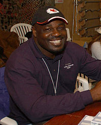

Christian Okoye

A member of the Igbo ethnic group, Okoye was born in Enugu, Nigeria.
He arrived in the US at age 21 and did not play American football until age 23,
when he joined the squad at California's Azusa Pacific University.
He excelled in track and field, winning seven college titles in the shot put, discus, and hammer throw. The first time he attended an American football
game he thought the game was boring. After the Nigerian government declined Okoye for the Olympics in track and field, he sought other activities and went out for American football.
Initially, he did not enjoy the roughness of football and considered quitting but friends convinced him to continue playing. His speed (4.45-seconds in the 40-yard dash)
was unusual for someone his size (6'1" and 260 lbs), and this rare combination of talents led
to his selection by the Kansas City Chiefs in the second round of the 1987 NFL Draft.
- https://en.wikipedia.org/wiki/Christian_Okoye